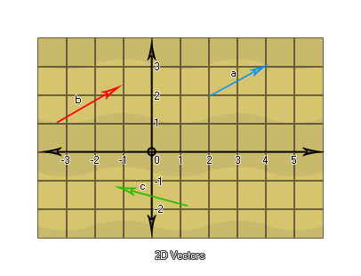

在创建一个任何复杂程度的游戏情况下，你都有可能需要去处理向量。它们被用于物理、人工智能（AI）、三角学以及许多其余场合中，但究竟什么是向量呢？好吧，通俗的说，一个向量就是一个被方向化的量。我们可以通过观察一个一维向量开始，其与一个单独的数字等效，通过绘制一个有限长的线段，标一个从0开始到5结束的箭头。这就是一个等于5的向量a，并且如果我们绘制另一个箭头从5开始到8结束，我们就会得到等于3的向量b。
你应当意识到无论向量从哪开始，所有取决于的因素是它的长度以及它的指向。所以向量b从5开始，具有3个单位长并且方向向“右”，使得它和一个从0开始指向3的向量等效。现在，你也能把这些向量加起来，通过向量将这两个向量a和b首位相连的放在一起来获得等于8的向量c。那么负数会怎样呢？好吧，在上图中，如果一个指向“右”的向量与一个正数对应，你就会发现一个指向“左”的向量对应一个负数，这使得一个一维向量无非就是一个含符号（+/-）的数。这解释了向量的基本概念：只取决于长度和方向（在上述情况中是“左”和“右”），而与位置无关①。
①：这个性质通常被称为向量的可平移性或向量的平移不变原理。
那么，二维向量会怎样呢？好吧，我们可以把它们考虑成不仅仅由“左”和“右”组成的，而是也包含“上”和“下”的：

现在，这些实际上嗨不是向量因为我们还需要用它们的起始和结束坐标来制约它们。观察向量a我们可以发现它有一个起始坐标为(2,2)以及一个结束坐标(4,3)，并且因此为了从中得到向量，我们需要通过用结束坐标减去起始坐标来制约它，像这样：[x2-x1,y2-y1]=[4-2,3-2]=[2,1]。我们同样可以对向量b做这件事：[x2-x1,y2-y1]=[-1.2-(-3.2),(2.1-1.1)]=[2,1]。注意到没有？这两个向量是相等的！这也是另一个说明了向量与位置无关，只和长度和方向有关的演示，并且我们可以把这些向量画到一个局部(0,0)坐标系的周围：

这也就意味着一个二维向量由两个值定义，相对于局部(0,0)坐标系的一个x位置和一个y位置。那么接下来三维向量呢？他们具有了附加的“深度”维度来竞争并且将被计算为一个像这样的局部坐标系周围的位置(x,y,z)：

| Converted from CHM to HTML with chm2web Pro 2.85 (unicode) |